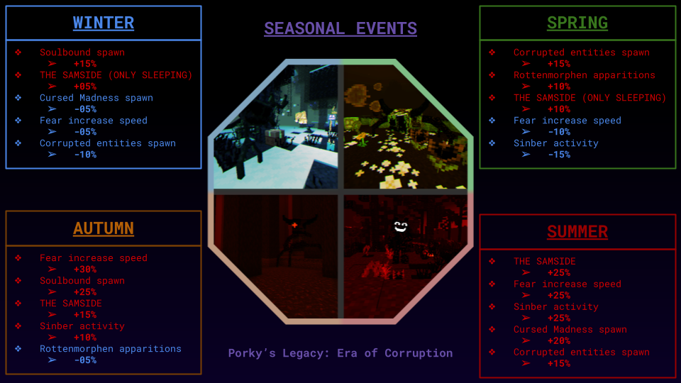
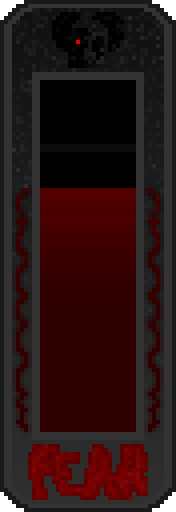
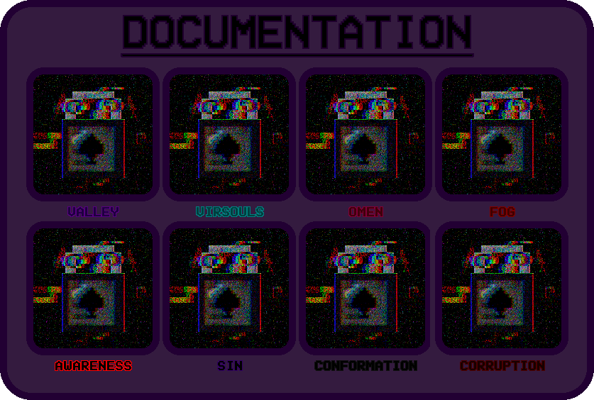
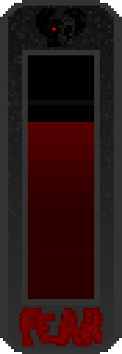
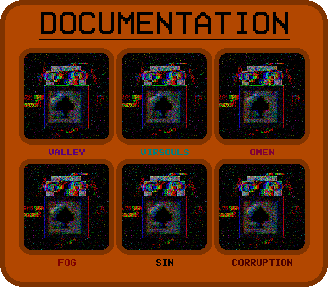

Deadtime Chase Theme (true/false) (DEFAULT = TRUE) [ADDED IN V4.0.333]
Allows Deadtime Jones to play its music while it is hunting you.
Here you can find a lot of information on topics related to commands, configuration, controls, inventories, etc.
Allows Deadtime Jones to play its music while it is hunting you.
Displays a clock on your top left screen corner while being on THE SAMSIDE that will show you how much time is left until you'd be freed from there.
Allows the user to view information related to testing. FOR MORE INFO: PLEASE CONTACT WHEELFORM AT THE TESTING ZONE!
//REMEMBER TO REMOVE THIS!!
Lets you change when you want the fear bar to be visible.
Avoids getting your world "corrupted" or "banned" when consumed by the dark in the SAMSIDE. Instead, HE will take all your inventory. ;)
Entities/Events/Environment will behave differently depending on your current IRL season.
Here's a diagram of how it should works:

Allows users to freely choose the world's fate after the final boss fight: WARNING! THIS REALLY COULD LITERALLY END YOUR WORLD IF YOU CHOOSE WRONG!
// WHAT ARE YOU TALKING ABOUT, FINAL BOSS FIGHT?!!!!! THIS IS A MOD! NOT A GAME!
/gamerule AreYouScared? (true/false) (DEFAULT = TRUE) [ADDED IN V1.0.333]While active, the fear bar will be fully functional alongside its events and encounters.
/gamerule AllowCorruptedPlague (true/false) (DEFAULT = TRUE) [ADDED IN V4.0.333]While active, Corruptinies are able to spread through "Corrupted Spores," making them renewable and also able to spread more into your world.
/gamerule DeatimeSpawnChance (0/100) (DEFAULT = 5) [ADDED IN V1.1.333]Allows you to modify the probability of generating corrupt entities.
The fear bar is a vertical bar standing on your right side of the screen; you can toggle its visibility to various modes inside the options menu of the mod.
This bar will increase or decrease depending on various things; some of those are the biome, the entities, the light (overall), the dimension, etc...
There are some special cases, such as having close certain entities, such as Wardens, Piglin Brutes, Withers, or Ender Dragons.
The Fear bar allows the player to experience some hallucinations, paranoia, or even anguish; see or hear things; alert entities such as Rottenmorphen; or even end up in the deepest hole of...
Yeah, those things, you know.

To open this menu, you must press the "I" on your keyboard (you can change it in controls). This allows you to read the documents related to the entities and their behavior. There are 8 cases in total, and each one can be found in one or many structures around the world related to their lore (including "vanilla" ones). To unlock a document, you must use it in one of your hands, and then it will display as unlocked in your document inventory. But be careful! If you die, all your unlocked documents would lock again.

/gamerule DeadtimeSpawn (true/false) (DEFAULT = TRUE) [ADDED IN V1.0.333] [REMOVED IN V1.1.333]This gamerule allowed corrupted entities to spawn with a random and even higher chance; this was the reason it was changed to the very well-known "/gamerule DeadtimeSpawnChance."
/gamerule SafeMode (true/false) (DEFAULT = FALSE) [ADDED IN V3.0.333] [REMOVED IN V4.0.333]This prevented your world from being corrupted by being consumed by SAMSIDE; however, your inventory will be deleted. (That's just how it is ;) ).
The fear bar visibility had to be toggled with the "O" key on your keyboard. And when the game rule "AreYouScared?" was disabled, the bar remained invisible.
Here's how the fear bar looked before V4.0.333:

This is how the old documentation inventory looked...
Yeah, that's all.
